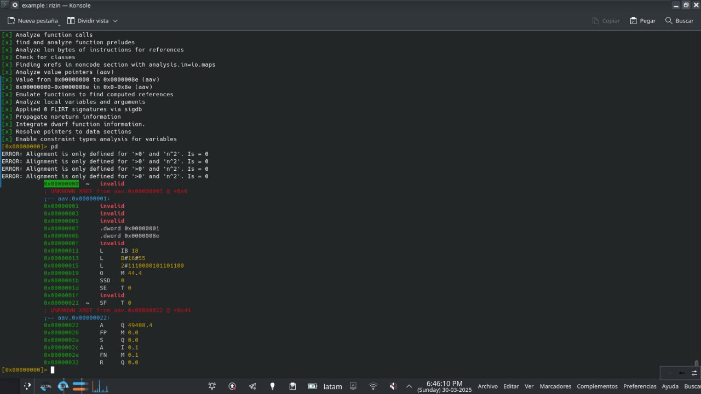
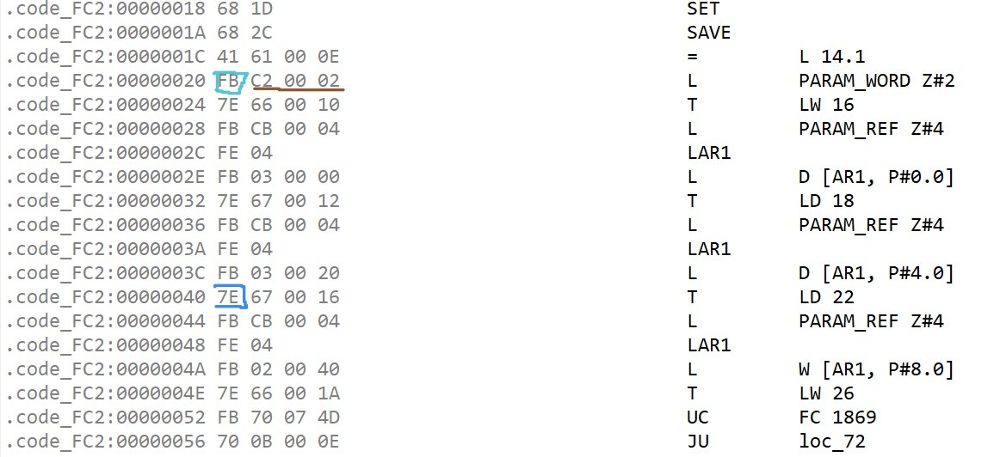
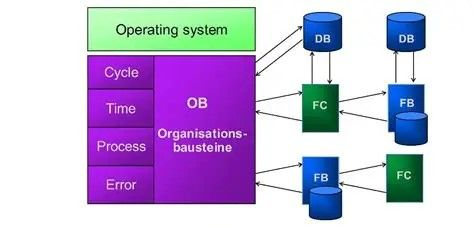

Exploit Development en Entornos OT: Del AWL al Shellcode en PLC Siemens, ROP sobre ARM/MIPS y Bypass de Sandbox
Unificación de conocimientos de reversing de bytecode AWL/MC7/MC7+ con JEB y rz-libmc7, desarrollo de exploits para controladores industriales Siemens S5/S7-300/S7-400/S7-1200/S7-1500, técnicas de ROP sobre la arquitectura ARM/MIPS subyacente (kernel ADONIS), bypass de sandbox documentado en CVE-2020-15782 (Claroty Team82), y guía práctica para el levantamiento de un laboratorio ICS completo con hardware real, simuladores y la infraestructura ofuscada como base de operaciones blindada.
/índice_del_laboratorio_ot +
- Prefacio: Por qué Exploit Development en OT
- Fundamentos de AWL como Lenguaje de Explotación
- Arquitectura ARM/MIPS Subyacente y el Kernel ADONIS
- Del AWL al Shellcode: Traducción, Ofuscación y Herramientas
- ROP sobre MC7/MC7+: Gadgets en la VM del PLC
- Superficie de Ataque en Entornos ICS Reales
- Casos Reales: De TRITON a CVE-2020-15782
- Guía de Laboratorio ICS: Hardware, Simuladores y Red OT
- Workshop 1: Shellcode AWL Básico (Encender/Apagar Salida)
- Workshop 2: ROP sobre MC7 (Bypass de DEP en PLC)
- Workshop 3: Fuzzing de Protocolo Modbus TCP y S7comm
- Workshop 4: Explotación Completa con Sandbox Escape (CVE-2020-15782)
- Integración con Infraestructura Ofuscada
- Automatización del Laboratorio
- Roadmap de Próximos Posts
- Conclusión
00. Prefacio: Por qué Exploit Development en OT
El desarrollo de exploits para entornos de tecnología operativa (OT) no es una extensión trivial del exploit development tradicional. Los controladores lógicos programables (PLC) ejecutan código en arquitecturas propietarias, utilizan lenguajes de bajo nivel como AWL que se traducen a bytecode para una máquina virtual —MC5 en S5, MC7 en S7-300/S7-400, y MC7+ en S7-1200/S7-1500— que corre sobre procesadores ARM o MIPS bajo el kernel ADONIS. La carrera hacia la ejecución de código nativo en PLCs, documentada por Claroty Team82 en CVE-2020-15782, demostró que es posible escapar del sandbox de la VM y escribir shellcode directamente en regiones protegidas de memoria.
Este artículo documenta la convergencia de cuatro líneas de investigación que he desarrollado en el portafolio:
- El reversing de AWL y la arquitectura MC5/MC7 documentado en PLC Siemens S5/S7: Arquitectura MC7 y AWL, donde diseccioné la máquina virtual, los registros (RLO, AKKU1, AKKU2), las instrucciones de salto y la estructura de los bloques de programa. Este análisis se complementa ahora con la documentación oficial de JEB Decompiler (Nicolas Falliere, PNF Software) sobre el formato binario de bloques S7, las convenciones de llamada __FC_CC y __FB_CC, y los tipos de datos MC7 (POINTER, ANY, S5TIME, DATE_AND_TIME).
- El laboratorio de exploit development tradicional de Windows Internals, ROP y Shellcode, donde construí cadenas ROP en 64 bits, analicé CVEs en Chrome V8, y monté un entorno con VirtualBox + fakedns + INetSim. La metodología de búsqueda de gadgets con ROPgadget se traslada ahora a binarios ARM/MIPS de firmware de PLCs.
- El ecosistema de herramientas de reversing de MC7, que incluye rz-libmc7 (plugin de rizin para desensamblar bytecode MC7 de S7-300/S7-400) y JEB Pro (soporte nativo para decompilar MC7 a pseudo-C). Ambas herramientas permiten analizar bytecode sin depender exclusivamente de hardware físico.
- La infraestructura ofuscada de WireGuard + udp2raw + Proxy Residencial, que proporciona el entorno blindado desde donde operar sin revelar la IP de origen. Esta infraestructura es crítica cuando se realizan pruebas contra PLCs reales conectados a Internet.
El resultado es este documento: una guía que toma el AWL como lenguaje de partida, lo traduce a conceptos de explotación binaria, construye laboratorios prácticos con hardware simulado y real, analiza el bypass de sandbox de CVE-2020-15782 como caso de estudio central, y propone una metodología replicable para cualquiera que quiera adentrarse en la seguridad ofensiva de sistemas de control industrial.
Todas las técnicas descritas se aplican sobre entornos de laboratorio controlados o sobre vulnerabilidades ya parcheadas y documentadas públicamente (CVE-2020-15782 fue parcheada por Siemens en 2021). El objetivo es estrictamente académico y de concienciación sobre la necesidad de hardening en infraestructuras críticas.
01. Fundamentos de AWL como Lenguaje de Explotación
AWL (Anweisungsliste, también conocido como STL —Statement List— en la documentación de Siemens) es el equivalente en el mundo PLC al ensamblador en el mundo de la computación de propósito general. Es un lenguaje de bajo nivel que utiliza nemónicos para representar operaciones sobre registros y operandos. Para un desarrollador de exploits, AWL ofrece un control preciso sobre el flujo de ejecución del autómata, exactamente como lo hace el Assembly sobre un procesador x86 o ARM.
Independientemente del lenguaje de programación utilizado —Ladder (LAD), Diagrama de Bloques (FBD), Structured Control Language (SCL), o el propio AWL—, el compilador STEP5/STEP7/TIA Portal genera bytecode MC5/MC7/MC7+ que es interpretado por la VM del PLC. Esto significa que el bytecode es el target real del exploit developer: podemos inyectar bytecode directamente sin pasar por el compilador, siempre que conozcamos la codificación de las instrucciones.
1.1 El Modelo de Registros del PLC como Superficie de Explotación
Los registros del PLC son el equivalente a los registros de la CPU en explotación binaria tradicional. Conocer su función es el primer paso para manipular el flujo de ejecución:
| Registro AWL | Bit | Función | Equivalente en Explotación |
|---|---|---|---|
| FC (First Check) | 0 | Indica si la instrucción es la primera de una cadena lógica. Si FC=0, la consulta se almacena directamente en RLO sin evaluar el estado anterior. | Similar al flag ZF (Zero Flag) en x86 — controla el inicio de cadenas lógicas |
| RLO (VKE) | 1 | Resultado de operación lógica: acumulador principal de operaciones booleanas. Cada operación lógica (U, UN, O, ON, X, XN) sobrescribe este registro. | EAX/RAX en x86 — acumulador principal. Controlarlo es controlar las decisiones del programa. |
| STA | 2 | Estado del bit direccionado. Refleja el valor del operando consultado. | Similar al flag CF (Carry Flag) — indica el estado de la última operación |
| OR | 3 | Indica si una operación AND previa dio 1, necesario para combinar AND con OR en cadenas lógicas. | Flag auxiliar para operaciones compuestas |
| OV | 4 | Desbordamiento aritmético: se activa en operaciones de coma flotante o enteros con overflow. | OF (Overflow Flag) en x86 |
| OS | 5 | Overflow Stored: latch del bit OV. Persiste hasta que se ejecuta una instrucción de fin de bloque o SPS. | Indicador de error almacenado (persistente) |
| CC0, CC1 | 6-7 | Códigos de condición: actualizados por operaciones aritméticas, comparaciones y desplazamientos. | Similares a SF (Sign Flag) y PF (Parity Flag) |
| BR | 8 | Binary Result: permite interpretar el resultado de una operación de palabra como resultado binario e integrarlo en la cadena lógica. | Usado por SFC/SFB como indicador de éxito/error |
| AKKU1, AKKU2 | 32 bits c/u | Acumuladores para operaciones aritméticas y de carga/transferencia. AKKU1 es el principal; AKKU2 se usa en comparaciones y operaciones binarias. | Equivalentes a EAX:EBX en x86 — fundamentales para operaciones de 32 bits |
| AR1, AR2 | 32 bits c/u | Registros de direccionamiento: contienen punteros MC7 de 4 bytes (área + offset + bit). Usados para direccionamiento indirecto intra-área e inter-área. | Equivalentes a ESI:EDI en x86 — controlan el acceso a memoria |
| DB1, DB2 | 16 bits c/u | Registros de bloque de datos: DB1 apunta al bloque de datos global (DB), DB2 al bloque de datos de instancia (DI). No son directamente accesibles. | Similares a los registros de segmento DS:ES en x86 real mode |
El registro RLO es el acumulador principal de operaciones booleanas. Cada operación lógica (U, UN, O, ON, X, XN) sobrescribe su valor. Si un atacante puede controlar el flujo de instrucciones AWL —por ejemplo, inyectando bytecode MC7 a través de S7comm (puerto TCP 102) o Modbus TCP (puerto 502) sin autenticación— puede manipular el RLO para forzar evaluaciones booleanas que el programa original no contempla. Esto es análogo a controlar EAX en un exploit x86: una vez que controlás el acumulador, controlás las decisiones del programa.

1.2 Instrucciones de Salto como Primitivas de Control de Flujo
Las instrucciones de salto en AWL son las primitivas básicas para construir exploits. Su comportamiento es directamente análogo a los JMP, JE, JNE del ensamblador x86:
| AWL S5 | AWL S7 | Condición | Equivalente x86 | Uso en Exploit |
|---|---|---|---|---|
| SPA | SPA | Incondicional | JMP | Redirigir ejecución a shellcode |
| SPB | SPB | RLO = 1 | JNE / JNZ | Salto condicional tras evaluación |
| SPN | SPN | RLO = 0 | JE / JZ | Bypass de verificaciones de seguridad |
| SPZ | SPZ | AKKU1 = 0 | JZ (tras CMP) | Control post-aritmética |
| SPP | SPP | AKKU1 > 0 | JG | Validación de contadores |
| SPM | SPM | AKKU1 < 0 | JL | Detección de underflow |
| SPO | SPO | OV = 1 | JO | Captura de desbordamiento aritmético |
| SPS | SPS | OS = 1 | — | Detección de error persistente (latch) |
| SPR | SPR | BR = 1 | — | Validación de operaciones aritméticas sin error |
Durante las pruebas prácticas con hardware S5-95U, verifiqué que SPA y SPB son las únicas instrucciones de salto que funcionan consistentemente en el equipo disponible. En S7-300/S7-400, todas las instrucciones de salto documentadas son funcionales. Esto no es una limitación menor para S5: significa que cualquier exploit para esta plataforma debe construirse exclusivamente con saltos incondicionales y saltos condicionados al RLO.
1.3 El Desbordamiento de Pila de Módulos (STUEB) como Vector de Ataque
AWL permite un máximo de 16 niveles de anidamiento en llamadas a módulos (UC, CC). Si se supera este límite, se produce un desbordamiento de pila de módulos (STUEB). Este es un vector de ataque clásico: un atacante que logre inyectar llamadas recursivas no controladas puede provocar un comportamiento indefinido en el PLC, potencialmente corrompiendo la pila de ejecución y redirigiendo el flujo del programa.
En mis pruebas con el S5-95U, no pude verificar experimentalmente el comportamiento tras STUEB porque el simulador PC Simu descartaba la instrucción de transferencia que toma el contenido de AKKU1 y lo envía a memoria. La validación de este vector requiere hardware real o un emulador más preciso. Esta es una de las tareas pendientes en el roadmap de la Sección 14.
02. Arquitectura ARM/MIPS Subyacente y el Kernel ADONIS
Los PLCs modernos de Siemens —en particular la familia S7-1200 y S7-1500— no ejecutan AWL directamente sobre el silicio. Utilizan procesadores ARM o MIPS que corren el kernel propietario ADONIS. El bytecode MC7 (S7-300/S7-400) o MC7+ (S7-1200/S7-1500) es interpretado por una capa de firmware que actúa como máquina virtual. Sin embargo, el trabajo de Claroty Team82 demostró que esta VM puede ser vulnerada: la vulnerabilidad CVE-2020-15782 permitió escapar del sandbox y escribir shellcode ARM/MIPS directamente en regiones protegidas de memoria del kernel.
2.1 VM vs Microprogramación: El Debate que Define la Estrategia de Explotación
El debate académico sobre si MC5/MC7/MC7+ constituye una máquina virtual o una arquitectura microprogramada tiene consecuencias directas para el exploit development:
- Si es una VM: el exploit debe operar dentro de los límites del bytecode. Las instrucciones disponibles son las que la VM expone. Escapar de la VM requeriría una vulnerabilidad en el intérprete mismo —exactamente lo que Claroty logró con CVE-2020-15782—.
- Si es microprogramación: siguiendo el modelo de Matloff y Franklin, donde una Máquina A (CPU ARM/MIPS real) ejecuta un microprograma (firmware) que la hace comportarse como una Máquina B (la que entiende MC7), el procesador subyacente está expuesto a través del firmware. Un exploit que logre ejecutar instrucciones ARM/MIPS nativas puede tomar control total del hardware.
La evidencia —especialmente el caso de CVE-2020-15782— apoya un modelo híbrido: MC7/MC7+ es una capa de abstracción que traduce bytecodes a instrucciones ARM/MIPS, pero esta capa corre en un espacio de usuario restringido (sandbox) sobre el kernel ADONIS. El sandbox limita el acceso a memoria y recursos del sistema. La vulnerabilidad de Claroty permitió romper esa restricción: escribir fuera de los límites del sandbox y parchar un opcode de la VM para que, cuando el sistema operativo lo ejecutara, saltara al shellcode del atacante.

2.2 CVE-2020-15782: El Caso de Estudio Definitivo
La vulnerabilidad CVE-2020-15782 (CVSS 8.1, CWE-119: Improper Restriction of Operations within the Bounds of a Memory Buffer) afectó a los PLCs SIMATIC S7-1200 y S7-1500. Descubierta por Tal Keren de Claroty Team82 y parcheada por Siemens en 2021, permitió a un atacante remoto con acceso de red al puerto TCP 102 (S7comm) y sin autenticación:
- Escapar del sandbox de la VM: escribir datos arbitrarios en regiones de memoria protegidas que normalmente están fuera del alcance del bytecode MC7+.
- Parchar un opcode de la VM: modificar una instrucción de la máquina virtual en memoria para que, al ser ejecutada por el sistema operativo, redirija el flujo a shellcode controlado por el atacante.
- Ejecutar código ARM/MIPS nativo: inyectar shellcode directamente en una estructura interna del kernel ADONIS, obteniendo ejecución de código a nivel de kernel.
- Persistir indetectable: el código inyectado a nivel de kernel es invisible para el sistema operativo y para cualquier herramienta de diagnóstico estándar.

CVE-2020-15782 es el caso de estudio central de este artículo porque demuestra que la VM es vulnerable. No es una barrera infranqueable. La estrategia de explotación en PLCs modernos debe considerar dos capas: (1) la capa de bytecode MC7/MC7+ para la inyección inicial, y (2) la capa ARM/MIPS nativa para el sandbox escape y la ejecución de código arbitrario. En el Workshop 4 se detalla un laboratorio para replicar esta cadena de explotación en un entorno controlado.
2.3 El Flujo de Compilación: Del Código Fuente al Bytecode
Entender cómo el código fuente (AWL, SCL, LAD, FBD) se transforma en bytecode es esencial para un exploit developer. El proceso es el siguiente:

Como se observa en el diagrama, todos los lenguajes de programación convergen en el mismo bytecode MC7/MC7+. Esto significa que un exploit basado en bytecode es independiente del lenguaje original. Podemos escribir shellcode directamente en bytecode MC7 sin pasar por el compilador, siempre que conozcamos la codificación de las instrucciones. Esta codificación ha sido documentada parcialmente por:
- JEB Decompiler (PNF Software): El artículo de Nicolas Falliere detalla que la instrucción L (carga) es representada por opcodes que varían según el tipo de dato inmediato (0x30 para dec16, 0x38 para dec32, 0x28 para hex8, etc.), y que la instrucción T (transferencia) corresponde al opcode 0x7E. La mayoría de las instrucciones MC7, incluyendo sus operandos, tienen una longitud máxima de 4 bytes.
- rz-libmc7 (rizinorg): Plugin open-source para rizin que implementa un desensamblador de MC7 bytecode. Soporta la decodificación de instrucciones aritméticas (+D, -D, *D, /D, MOD), operaciones lógicas, y acceso a memoria.


2.4 ARM vs x86: Lo que Cambia para el Exploit Developer
La transición de explotación x86 a ARM introduce diferencias fundamentales que afectan la construcción de shellcode y cadenas ROP:
| Característica | x86/AMD64 | ARM | Impacto en Explotación |
|---|---|---|---|
| Conjunto de instrucciones | CISC (instrucciones complejas, longitud variable) | RISC (instrucciones simples, longitud fija de 32 bits en ARM, 16/32 en Thumb) | Shellcode más largo en ARM, pero más predecible y sin bytes prohibidos por diseño |
| Convención de llamada | Argumentos en pila (x86) o RCX,RDX,R8,R9 (AMD64 Windows) | Argumentos en R0-R3, retorno en R0. Stack para argumentos adicionales | Los gadgets ROP deben manipular registros diferentes. Pop {r0, pc} es el gadget universal de ARM |
| Ejecución condicional | Solo saltos condicionales (Jcc) | Casi todas las instrucciones pueden ser condicionales (sufijos -eq, -ne, -gt, etc.) | Mayor densidad de gadgets útiles. Instrucciones como MOVEQ, ADDNE pueden ser gadgets |
| PC como registro | RIP/EIP no es directamente accesible como registro de propósito general | R15 (PC) es de propósito general. Se puede leer y escribir como cualquier registro | Lectura/escritura directa del contador de programa facilita el control de flujo |
| Endianness | Little-endian | Bi-endian (típicamente little-endian en PLCs Siemens) | Shellcode debe verificar endianness del target. Los firmwares .upd de Siemens son little-endian |
| Modos de ejecución | Ring 0 (kernel) / Ring 3 (usuario) | EL0 (usuario) / EL1 (kernel) / EL2 (hypervisor) / EL3 (secure monitor) | El sandbox de MC7+ corre en EL0. El kernel ADONIS en EL1. El sandbox escape busca escalar de EL0 a EL1 |
Para construir shellcode ARM, es indispensable tener a mano la referencia de instrucciones. Además de Felix Cloutier para x86, recomiendo el ARM Instruction Set Reference Guide y x64.syscall.sh para las llamadas al sistema en Linux/ARM. Para MIPS, la referencia es el MIPS Architecture Reference Manual.
03. Del AWL al Shellcode: Traducción, Ofuscación y Herramientas
El shellcode para PLCs presenta desafíos únicos. A diferencia del shellcode para sistemas operativos de propósito general —donde el objetivo típico es ejecutar /bin/sh o establecer una reverse shell—, en un PLC el shellcode debe interactuar con el proceso físico: abrir/cerrar válvulas, modificar setpoints, falsear lecturas de sensores, o simplemente paralizar la CPU. Además, debe operar dentro de las restricciones de la VM: registros limitados, áreas de memoria segmentadas (I, Q, M, L, DB, DI, T, C), y un conjunto de instrucciones optimizado para control industrial, no para computación general.
3.1 Shellcode AWL Mínimo: Encender una Salida Digital
El shellcode más simple en AWL consiste en forzar una salida independientemente de la lógica del programa original. Esto es análogo al shellcode clásico de x86 que ejecuta exit(0): no hace nada espectacular, pero demuestra que tenemos control de la ejecución.
Este shellcode no depende de ninguna entrada. Al inyectarlo en un bloque de programa (PB/FC) o bloque de función (FB) y redirigir la ejecución hacia él, las salidas se activan sin que el programa original pueda evitarlo. Es la prueba de concepto mínima: si podemos ejecutar esto, tenemos control del PLC.
3.2 Shellcode AWL Condicional: Puerta Trasera con Contador
Un shellcode más sofisticado puede implementar una puerta trasera condicional: modificar el comportamiento del PLC solo cuando se recibe una señal específica. El siguiente ejemplo implementa una puerta trasera que se activa al recibir un pulso específico en una entrada, usando contadores como mecanismo de activación:
3.3 Herramientas para el Reversing de Bytecode MC7
El ecosistema de herramientas para analizar bytecode MC7 ha madurado significativamente. Las tres principales son:
| Herramienta | Desarrollador | Funcionalidad | Licencia | Target |
|---|---|---|---|---|
| JEB Pro | PNF Software | Desensamblador y decompilador de MC7 a pseudo-C. Adquisición de bloques desde STEP7. Soporte para formatos de bloque binario (interno LE y red BE). Recuperación de interfaces (IN/OUT/IN_OUT/STATIC/TEMP). Análisis de tipos de datos (POINTER, ANY, S5TIME, DATE_AND_TIME, ARRAY, STRING). | Comercial (demo disponible) | S7-300, S7-400 |
| rz-libmc7 | rizinorg (wargio, Jegeva) | Plugin para rizin que implementa desensamblador de MC7 bytecode. Decodifica instrucciones aritméticas, lógicas, de salto y de acceso a memoria. | Open Source (GitHub) | S7-300, S7-400 |
| Ghidra | NSA | Framework de ingeniería inversa con soporte para múltiples arquitecturas. Requiere desarrollo de extensiones para MC7, pero ofrece soporte nativo para ARM y MIPS (análisis de firmware). | Open Source | Firmware ARM/MIPS de PLCs |
La combinación de rz-libmc7 para desensamblado rápido y JEB Pro para decompilación a alto nivel cubre el flujo completo de análisis de bytecode. Para el análisis del firmware ARM/MIPS subyacente, Ghidra es la herramienta de elección, especialmente con los scripts de análisis de firmware que permiten identificar la capa de traducción de MC7 a instrucciones nativas.

A diferencia del shellcode x86 donde el byte nulo (0x00) es problemático, en MC7 el formato de instrucción es de longitud fija o semi-fija (máximo 4 bytes por instrucción con operando). Esto significa que no hay "bytes prohibidos" en el sentido tradicional. Sin embargo, ciertas combinaciones de opcodes pueden ser rechazadas por el firmware del PLC si no corresponden a instrucciones válidas. La ofuscación en MC7 consiste más en camuflar la lógica del shellcode —usando instrucciones redundantes, saltos indirectos, o codificación condicional— que en evadir filtros de bytes.
04. ROP sobre MC7/MC7+: Gadgets en la VM del PLC
La Programación Orientada al Retorno (ROP) es la técnica estándar para evadir DEP/NX/XN. En el contexto de un PLC, donde el firmware puede marcar regiones de memoria como no ejecutables, ROP permite construir cadenas de ejecución utilizando únicamente instrucciones existentes en el binario.
4.1 Adaptación de ROP al Entorno MC7
En MC7, el equivalente a los gadgets ROP son secuencias de instrucciones AWL que terminan en BE (fin de bloque), BEB (fin condicional si RLO=1) o BEA (fin incondicional). Estas instrucciones cumplen la función del RET en x86: devuelven el control al llamante. Una cadena ROP en MC7 consistiría en encadenar múltiples bloques de función (FB) o bloques de programa (FC) que terminen en BE, utilizando la pila de módulos para controlar el flujo.
La limitación práctica es que no existe un debugger paso a paso para PLCs que muestre el estado de los registros en tiempo real. Las versiones modernas de los entornos de programación han abandonado el AWL en favor de lenguajes de alto nivel, sin ofrecer visualización del código de bajo nivel. Esto dificulta enormemente la búsqueda automatizada de gadgets, que en x86 se hace con herramientas como ROPgadget o ropper.
4.2 Estrategia Híbrida: ROP en ARM/MIPS Subyacente
Dado que el firmware del PLC corre sobre ARM o MIPS, una estrategia más viable —y la utilizada por Claroty en CVE-2020-15782— es buscar gadgets ROP en el binario ARM/MIPS del firmware, no en el bytecode MC7. Esto requiere:
- Extraer el firmware del PLC: mediante la actualización de firmware (.upd), ingeniería inversa del protocolo de descarga, o acceso físico (JTAG/UART). El firmware contiene el kernel ADONIS y todas las bibliotecas del sistema.
- Analizar el binario ARM/MIPS con herramientas estándar: ROPgadget, ropper, o Ghidra con scripting en Python.
- Construir una cadena ROP que, combinada con la vulnerabilidad de sandbox escape, permita ejecutar código arbitrario en el procesador real.
Extraer el firmware de un PLC real requiere acceso físico al dispositivo y, frecuentemente, habilidades de hardware hacking (JTAG, UART, extracción de chips de memoria). Esta es una barrera significativa para la investigación independiente. En el laboratorio propuesto en la Sección 7, comenzamos con simuladores y firmwares públicos para luego escalar a hardware real.
05. Superficie de Ataque en Entornos ICS Reales
La superficie de ataque en un entorno ICS no se limita al PLC. Incluye todos los componentes que interactúan con él: protocolos de comunicación, estaciones de ingeniería, interfaces HMI, y sistemas SCADA. Mapear esta superficie es el primer paso para identificar vectores de explotación.
| Componente | Protocolo/Puerto | Vector de Ataque | Impacto | Caso Documentado |
|---|---|---|---|---|
| PLC Siemens S7-300/400 | S7comm (TCP 102) | Inyección de comandos STOP/RUN, descarga/inyección de firmware | Parada de planta, modificación de lógica de control | Stuxnet (2010) |
| PLC Siemens S7-1200/1500 | S7comm+ (TCP 102) | Sandbox escape, escritura en memoria protegida, ejecución de código nativo ARM/MIPS | Control total del PLC a nivel de kernel | CVE-2020-15782 (Claroty, 2021) |
| Modbus TCP | TCP 502 | Escritura en coils/registers sin autenticación por diseño | Manipulación de E/S, falseo de sensores, activación/desactivación de actuadores | Múltiples incidentes no atribuidos |
| Profinet | Ethernet industrial (capa 2) | Inyección de tramas, denegación de servicio en tiempo real | Interrupción de comunicación determinista entre PLCs | Investigaciones académicas |
| OPC UA/DA | TCP 4840, DCOM (135, 445) | Enumeración de tags, lectura/escritura remota de variables de proceso | Fuga de información del proceso industrial, modificación de setpoints | Havex RAT (2013-2014) |
| HMI Magelis/Harmony | HTTP/HTTPS, VNC (5900) | Contraseñas por defecto, vulnerabilidades web, exposición de pantalla de operador | Control visual del operador comprometido, comandos no autorizados | Auditorías de seguridad |
| Estación de Ingeniería (TIA Portal) | SMB (445), RDP (3389), WinRM (5985) | Compromiso del equipo que programa todos los PLCs de la planta | Acceso total a toda la red OT, modificación de lógica en todos los PLCs | Patrón de ataque recurrente |
| Schneider Modicon Quantum | Modbus TCP (502), Serial Modbus Driver | Paralización de CPU sin autenticación, buffer overflow en driver serial | Denegación de servicio, potencial ejecución de código | ICS-ALERT-12-020-03B (CISA) |
El caso de Modbus TCP es paradigmático: es un protocolo sin autenticación por diseño. Si un atacante puede enviar un paquete a la IP del PLC en el puerto 502, el PLC obedece. No hay usuario, no hay contraseña, no hay token. La única defensa es la segmentación de red. Y sin embargo, los trabajos de grado universitarios revisados en el análisis de infraestructuras venezolanas documentan configuraciones donde la red OT no está adecuadamente segmentada de la red corporativa.
06. Casos Reales: De TRITON a CVE-2020-15782, Lecciones para el Atacante
El estudio de ataques reales a infraestructuras ICS proporciona lecciones invaluables sobre vectores de entrada, persistencia y objetivos. Los casos que analizo a continuación no son teóricos: son incidentes documentados por agencias gubernamentales y empresas de ciberseguridad.
6.1 TRITON (2017): El Ataque al Sistema de Seguridad
TRITON (también conocido como TRISIS) atacó los controladores de seguridad Triconex de Schneider Electric en una planta petroquímica en Oriente Medio. Lo que lo hace único es que no apuntaba al sistema de control de producción, sino al Sistema Instrumentado de Seguridad (SIS). El SIS es la última línea de defensa: si el proceso sale de parámetros seguros, el SIS debe detener la planta. Al reprogramar la lógica del SIS, los atacantes podían haber causado una catástrofe física.
Lección para el exploit developer: El objetivo más valioso no siempre es el PLC de producción. Los sistemas de seguridad, al ser los menos monitoreados y los que menos actualizaciones reciben, son objetivos ideales. Un shellcode que modifique la lógica de seguridad puede permanecer latente hasta que las condiciones del proceso activen la condición de peligro, momento en el cual el SIS —ya comprometido— no actuará.
6.2 Havex RAT (2013-2014): Enumeración vía OPC
Havex introdujo una táctica que revolucionó el reconocimiento en entornos ICS: una vez instalado en un sistema corporativo (vector inicial: email de phishing), utilizaba el estándar OPC para enumerar dispositivos industriales en la red. Havex se conectaba a servidores OPC vía DCOM y recopilaba: CLSID, nombre del servidor, ID del programa, versión de OPC, información del proveedor, estado de ejecución, número de grupos y ancho de banda del servidor.
Lección para el exploit developer: La fase de reconocimiento no requiere acceso al PLC. Los protocolos estándar como OPC son una mina de información sobre la arquitectura de control. Un exploit que incluya un módulo de enumeración OPC puede mapear toda la red OT antes de lanzar el ataque principal.
6.3 CVE-2020-15782 (2021): El Sandbox Escape Definitivo
La vulnerabilidad descubierta por Tal Keren de Claroty Team82 marca un antes y un después en la explotación de PLCs. Demostró que:
- La VM no es una barrera infranqueable: un desbordamiento de búfer en una operación específica de la VM permitió escribir fuera de los límites del sandbox.
- El firmware es accesible: mediante ingeniería inversa del protocolo S7comm+ y del formato de actualización .upd, se puede extraer y analizar el firmware completo.
- La ejecución de código nativo es posible: al parchar un opcode de la VM en memoria, el shellcode ARM/MIPS inyectado se ejecuta cuando el sistema operativo invoca esa instrucción.
- La detección es extremadamente difícil: el código a nivel de kernel es invisible para las herramientas de diagnóstico del PLC y para el TIA Portal.
Siemens parcheó esta vulnerabilidad en 2021 mediante actualizaciones de firmware para S7-1200 y S7-1500. Sin embargo, el caso demuestra que la arquitectura de seguridad de los PLCs modernos —sandbox + VM + kernel— es vulnerable a ataques sofisticados. La lección para el defensor es clara: mantener los firmwares actualizados, segmentar la red OT, y monitorear el tráfico S7comm en busca de anomalías.
07. Guía de Laboratorio ICS: Hardware, Simuladores y Red OT
Montar un laboratorio ICS funcional es el paso más importante —y el más costoso— para practicar exploit development en entornos OT. Aquí propongo una arquitectura escalable que comienza con software gratuito y crece hasta incluir hardware real, todo ello operando desde la infraestructura ofuscada documentada en WireGuard + udp2raw.
7.1 Arquitectura del Laboratorio
7.2 Componentes del Laboratorio y Costos
| Componente | Software/Hardware | Propósito en el Laboratorio | Costo Aprox. (USD) |
|---|---|---|---|
| Nodo A (VPS) | Ubuntu 22.04 LTS + WireGuard + udp2raw | Puerta de enlace ofuscada. Único punto de entrada desde Internet. | ~$6/mes (VPS mínimo 1GB RAM) |
| Nodo B (Hipervisor) | PC con 32GB RAM + VirtualBox 7.x | Host de todas las VMs del laboratorio. Corre redsocks + dnscrypt-proxy + dnsmasq. | Hardware propio (~$800-1500) |
| PLC Simulado MC5 | PG 2000 + PC Simu | Target legacy para exploits AWL en S5. Pruebas de shellcode básico y STUEB. | Gratuito (abandonware) |
| PLC Simulado MC7 | WinSPS-S7 V6 | Target principal para exploits AWL/MC7 en S7-300. Compilación y desensamblado de bytecode. | Gratuito (demo funcional) |
| PLC Real S5-95U | Siemens S5-95U + módulos E/S + cable AS511 | Validación en hardware real de exploits AWL. Pruebas de STUEB y corrupción de pila de módulos. | ~$200-500 (eBay, usado) |
| PLC Real S7-300 | Siemens S7-300 (CPU 314/315) + MPI-USB adapter | Target para exploits MC7. Extracción de firmware vía S7comm. Análisis con JEB y rz-libmc7. | ~$300-800 (eBay, usado) |
| PLC Real S7-1200 | Siemens S7-1200 (CPU 1214C o similar) | Target para sandbox escape (CVE-2020-15782). Extracción de firmware .upd. Análisis de kernel ADONIS. | ~$400-900 (eBay, usado) |
| Estación Ingeniería | Windows 10 LTSC + TIA Portal V17 + STEP5 | Software de programación oficial de Siemens. Necesario para compilar y descargar código a PLCs reales. | Licencia TIA Portal (consultar Siemens) |
| Kali Linux | Kali 2024.x + toolchains ARM/MIPS | Estación de ataque ofensivo. Corre ROPgadget, AFL++, Wireshark, Metasploit, rz-libmc7. | Gratuito |
| REMnux | REMnux 7 + INetSim + fakedns | Simulación de servidores C2 falsos. Redirección DNS para entornos de prueba. | Gratuito |
| QEMU ARM/MIPS | QEMU system-arm / system-mips | Emulación del procesador del PLC para pruebas de shellcode nativo sin hardware real. | Gratuito |


7.3 Configuración de Red OT Segmentada
La red OT debe estar completamente aislada de la red del host y de Internet. En VirtualBox, esto se logra con una red Host-Only dedicada:
La VM de Kali no debe tener acceso directo a Internet desde la red OT. Todo el tráfico de salida debe pasar por el túnel ofuscado hacia el Nodo A. Esto se configura con iptables en el Nodo B, redirigiendo el tráfico de Kali a través de redsocks + proxy residencial, exactamente como se documenta en la infraestructura de túnel ofuscado. Nunca se deben realizar pruebas ofensivas contra PLCs conectados a Internet sin autorización explícita y sin esta capa de ofuscación.
08. Workshop 1: Shellcode AWL Básico (Encender/Apagar Salida Digital)
Objetivo
Escribir, compilar e inyectar shellcode AWL mínimo que fuerce el encendido de una salida digital, independientemente de la lógica del programa original. Este taller valida la primitiva fundamental de cualquier exploit en PLC: control del RLO y escritura en salidas.
Entorno
- PLC simulado: WinSPS-S7 V6 (MC7) o PG 2000 + PC Simu (MC5).
- Editor AWL: cualquier editor de texto. Compilación con STEP5, STEP7 o el propio WinSPS-S7.
- Herramientas de análisis: rz-libmc7 para verificar el bytecode generado. JEB Pro (demo) para decompilar a pseudo-C.
- Target: programa original con lógica simple (ej: U E 2.0 ; = A 3.0) que será modificado para incluir el shellcode.
Procedimiento
- Escribir el shellcode: Crear un nuevo bloque de programa (PB 200 en S5, FC 200 en S7) con el shellcode de la Sección 3.1.
- Compilar: Compilar el programa con STEP5/WinSPS-S7. Verificar que no hay errores de sintaxis. Exportar el bloque compilado a formato binario (Formato 1 LE o Formato 2 BE según la documentación de JEB).
- Analizar el bytecode: Abrir el bloque compilado con rz-libmc7 y verificar la correspondencia entre instrucciones AWL y opcodes MC7. Documentar los opcodes para referencia futura.
- Cargar en el PLC: Transferir el programa al PLC simulado.
- Modificar el OB1: Insertar una llamada incondicional a PB/FC 200 al inicio del ciclo de scan:
// OB1 modificado: shellcode se ejecuta en cada ciclo de scan SPA PB 200 // S5: Salto incondicional al shellcode // UC FC 200 // S7: Llamada incondicional a función // ... lógica original del programa (nunca se ejecuta) ... BE
- Verificar: Ejecutar el PLC en modo RUN. Las salidas A 3.0, A 3.1 y A 3.2 deben encenderse inmediatamente, sin necesidad de activar ninguna entrada física.
Análisis de Resultados
Este shellcode funciona porque SET fuerza el RLO a 1 sin evaluar ninguna entrada. Es el equivalente a inyectar mov eax, 1; mov [output], eax; ret en un exploit x86. La diferencia crucial es que en un PLC, "encender una salida" tiene consecuencias físicas reales: puede abrir una válvula, arrancar un motor o desactivar un sistema de seguridad.
Extensión del taller: Usar rz-libmc7 para modificar directamente el bytecode del bloque compilado —sin pasar por el compilador— y verificar que el PLC ejecuta el bytecode modificado. Esto demuestra que la inyección directa de bytecode es viable.
09. Workshop 2: ROP sobre MC7 (Bypass de DEP en PLC)
Objetivo
Construir una cadena ROP utilizando bloques de función existentes en el firmware del PLC para ejecutar una acción sin inyectar código nuevo. Este taller demuestra el bypass de las protecciones de memoria que impiden la ejecución de código en regiones de datos.
Entorno
- PLC simulado: WinSPS-S7 V6 con firmware que contenga funciones reutilizables (bibliotecas IEC estándar).
- Herramientas: JEB Pro para identificar gadgets en los bloques del firmware. rz-libmc7 para verificar la secuencia de bytecode. Calculadora de offsets para construir la cadena.
Procedimiento
- Identificar gadgets: Usar JEB Pro para buscar en el firmware bloques de función (FB) existentes que realicen operaciones útiles y terminen en BE. Las bibliotecas IEC estándar (FC3, FC4, FC5, etc.) son una fuente rica de gadgets.
// Gadget FB 50: Carga constante en AKKU1 y transfiere a salida // (Este es un ejemplo conceptual; los gadgets reales dependen del firmware) FB 50 (existente en el firmware del PLC, identificado con JEB) L KH 00FF // Carga 0x00FF en AKKU1 (word hexadecimal) T AW 0 // Transfiere al word de salida AW 0 (A 0.0 - A 0.7) BE // "Ret": fin de bloque, vuelve al llamante
- Construir la cadena ROP: Encadenar múltiples gadgets en el OB1 modificado:
// Cadena ROP: FB 50 → FB 51 → FB 52 // La ejecución fluye: gadget1 → gadget2 → gadget3 → programa original UC FB 50 // Gadget 1: fuerza A 0.0-0.7 a 0xFF UC FB 51 // Gadget 2: fuerza A 1.0-1.7 a 0xFF UC FB 52 // Gadget 3: escribe en marca de memoria M 100.0 (persistencia) BE // Fin del OB1 modificado
- Ejecutar y verificar: Las salidas deben activarse sin que el programa original contenga instrucciones que lo hagan explícitamente. Verificar con rz-libmc7 que la cadena de bytecode corresponde a la secuencia esperada de UC (llamadas incondicionales).
Este taller es conceptual en la capa MC7. La búsqueda automatizada de gadgets en bytecode MC7 no tiene herramientas maduras como ROPgadget para ELF/PE. La identificación de gadgets es manual, revisando el código AWL de cada FB existente en el firmware con JEB Pro. Sin embargo, la estrategia híbrida —buscar gadgets en el binario ARM/MIPS del firmware con ROPgadget, como se describe en la Sección 4.2— es completamente viable y fue el enfoque utilizado por Claroty en CVE-2020-15782.
10. Workshop 3: Fuzzing de Protocolos Modbus TCP y S7comm
Objetivo
Utilizar AFL++ o un fuzzer personalizado para encontrar crashes en la implementación de Modbus TCP (puerto 502) y S7comm (puerto TCP 102) de un PLC simulado, y analizar el crash para determinar su explotabilidad.
Entorno
- PLC simulado: WinSPS-S7 V6 con puerto Modbus TCP expuesto en 192.168.100.50:502 y puerto S7comm en 192.168.100.50:102.
- Kali Linux: 192.168.100.10 con AFL++, Wireshark (dissectors Modbus y S7comm), y herramientas de red.
- Wireshark: Para capturar tráfico legítimo que servirá como semillas del fuzzer.
Procedimiento
- Capturar tráfico legítimo: Usar Wireshark en Kali para capturar una sesión Modbus TCP y S7comm entre la estación de ingeniería (192.168.100.20) y el PLC simulado (192.168.100.50). Identificar los paquetes de lectura de coils, escritura de registros, y comandos STOP/RUN.
- Extraer semillas: Exportar los paquetes capturados como datos binarios para usarlos como semillas del fuzzer.
- Configurar AFL++ con harness en Python:
// Harness de fuzzing para Modbus TCP (Python + sockets) // Compatible con AFL++ mediante entrada stdin import socket import sys # Leer input mutado de AFL++ data = sys.stdin.buffer.read() # Conectar al PLC simulado (Modbus TCP) sock = socket.socket(socket.AF_INET, socket.SOCK_STREAM) sock.settimeout(2.0) try: sock.connect(('192.168.100.50', 502)) sock.send(data) response = sock.recv(1024) sock.close() except Exception as e: # Crash detectado: AFL++ registra este input como interesante sys.exit(1) # Señal de crash para AFL++
- Ejecutar AFL++: Lanzar el fuzzer con las semillas extraídas y esperar crashes. Monitorear el PLC simulado para detectar reinicios inesperados o cambios de estado.
- Triaje de crashes: Para cada crash detectado, reproducirlo manualmente con un script Python dedicado. Analizar con Wireshark la respuesta del PLC (o la falta de respuesta). Clasificar el crash por tipo: buffer overflow, null pointer dereference, use-after-free, etc.
Resultados Esperados
En un PLC simulado sin hardening, es esperable encontrar crashes por:
- Longitud de paquete excesiva: buffer overflow en el parser Modbus o S7comm.
- Function codes inválidos: manejo incorrecto de códigos de función no implementados en Modbus.
- Direcciones de registro fuera de rango: lectura/escritura fuera de los límites del mapa de memoria Modbus, potencialmente accediendo a regiones de memoria protegidas (similar a CVE-2020-15782 pero en la capa de protocolo).
11. Workshop 4: Explotación Completa con Sandbox Escape (CVE-2020-15782)
Objetivo
Simular una cadena de explotación completa inspirada en CVE-2020-15782 que: (1) comprometa una estación de ingeniería a través de un drive-by en Chrome (CVE-2020-6507), (2) desde allí acceda a la red OT y detecte un PLC S7-1200, (3) explote la vulnerabilidad de sandbox escape para escribir shellcode ARM en memoria protegida del kernel ADONIS, y (4) ejecute código nativo que modifique el comportamiento del proceso físico.
Entorno
- Windows 10: 192.168.100.20 con Chrome <83 (vulnerable a CVE-2020-6507) y TIA Portal instalado.
- Kali Linux: 192.168.100.10 como servidor de exploit CVE-2020-6507 y centro de comando post-explotación.
- REMnux: 192.168.100.40 con INetSim + fakedns para redirección DNS y simulación de Internet falsa.
- PLC S7-1200 simulado: 192.168.100.30 corriendo en QEMU ARM con firmware vulnerable a CVE-2020-15782 (versión anterior al parche de 2021).
- PLC S7-1200 físico: 192.168.100.80 (opcional, para validación en hardware real).
Procedimiento
- Preparar el servidor de exploit CVE-2020-6507: En Kali, servir la página HTML que explota el out-of-bounds write en Chrome V8. El código JavaScript del exploit (documentado en el laboratorio de exploit development) ejecuta shellcode en el contexto del navegador.
- Redirección DNS con fakedns: En REMnux, configurar fakedns para que cualquier dominio solicitado por el Windows 10 redirija a la IP de Kali (192.168.100.10).
- Ejecutar el ataque drive-by: Desde el Windows 10 vulnerable, navegar a cualquier URL. fakedns redirige a Kali, que sirve el exploit CVE-2020-6507. El shellcode del navegador establece una reverse shell hacia Kali (192.168.100.10:4444).
- Reconocimiento post-explotación: Desde la reverse shell en Windows 10:
- Enumerar la red OT (192.168.100.0/24) usando comandos nativos de Windows (ping sweep, netstat, arp).
- Detectar el PLC S7-1200 en 192.168.100.30:102 (puerto S7comm abierto).
- Identificar la versión de firmware del PLC mediante consultas S7comm.
- Explotar CVE-2020-15782: Desde la reverse shell, ejecutar un script Python que:
- Se conecte al PLC por S7comm (puerto TCP 102).
- Envíe la secuencia de paquetes que dispara el desbordamiento de búfer en la operación vulnerable de la VM.
- Escriba el shellcode ARM en una región de memoria protegida del kernel ADONIS.
- Parcha un opcode de la VM para que, al ser invocado, salte al shellcode.
- Verificar: El shellcode ARM ejecutado en el PLC debe modificar el comportamiento del proceso físico. En el laboratorio, esto se verifica con un LED conectado a la salida A 3.0 que cambia de estado, demostrando que el ataque desde el navegador ha llegado al procesador ARM del PLC y ha modificado su comportamiento.
Este taller asume que se dispone de un firmware S7-1200 vulnerable (anterior al parche de 2021). Siemens corrigió esta vulnerabilidad mediante actualización de firmware. Para propósitos de laboratorio, se puede utilizar un PLC S7-1200 con firmware antiguo adquirido de segunda mano, o un emulador QEMU configurado con una imagen de firmware vulnerable. No se debe intentar explotar esta vulnerabilidad en PLCs en producción sin autorización explícita del propietario.
Además, CVE-2020-6507 requiere que el sandbox de Chrome esté deshabilitado para ser explotable remotamente. En el laboratorio, se puede ejecutar Chrome con --no-sandbox para validar la cadena completa, o utilizar un sandbox escape adicional si se dispone de uno.
12. Integración con Infraestructura Ofuscada
Todos los talleres anteriores asumen que el operador del laboratorio no quiere revelar su IP real al realizar pruebas contra PLCs conectados a Internet (por ejemplo, al descargar firmwares, consultar repositorios de vulnerabilidades, o comunicarse con PLCs remotos autorizados). La infraestructura documentada en WireGuard + udp2raw + Proxy Residencial proporciona exactamente eso:
- Nodo A (VPS público): Único punto de entrada desde Internet. Ejecuta WireGuard + udp2raw en modo servidor (faketcp:443, ofuscación XOR).
- Nodo B (Laboratorio local): Conecta al Nodo A vía udp2raw. Todo el tráfico de salida del laboratorio hacia Internet pasa por redsocks → SOCKS5 residencial, enmascarando la IP real.
- Kali Linux (VM en Nodo B): Su tráfico hacia Internet es capturado por iptables y redirigido a través del proxy residencial. Cualquier escaneo, exploit o conexión reversa hacia objetivos externos tendrá la IP del proxy, no la IP real del laboratorio.
- Red OT interna (192.168.100.0/24): Tráfico directo sin proxy para mínima latencia en las comunicaciones con PLCs simulados y reales.
La clave del diseño es que la red OT interna (192.168.100.0/24) no pasa por el proxy. Solo el tráfico que sale del laboratorio hacia Internet se ofusca. Esto permite que los exploits que establecen conexiones dentro de la red OT funcionen con latencia mínima, mientras que cualquier comunicación con el exterior —como la descarga de herramientas, consultas a repositorios de CVE, o comunicación con C2— queda blindada por el túnel ofuscado y el proxy residencial.
13. Automatización del Laboratorio
Siguiendo la filosofía de "infraestructura como código" (IaC) del artículo de túnel ofuscado, el laboratorio ICS completo puede ser desplegado con un script de Bash que automatiza:
- Verificación de dependencias: VirtualBox 7.x, QEMU (system-arm, system-mips), Python 3.x con pwntools, AFL++, ROPgadget, rz-libmc7, JEB Pro (opcional).
- Creación de VMs: Importación de appliances preconfiguradas para Kali, Windows 10, REMnux, y el PLC simulado.
- Configuración de red OT: Creación de la interfaz Host-Only vboxnet0, asignación de IPs estáticas a cada VM.
- Instalación de herramientas de reversing: Clonación y compilación de rz-libmc7 desde GitHub. Descarga de JEB Pro (demo). Instalación de disectors de Wireshark para Modbus y S7comm.
- Configuración del túnel ofuscado: WireGuard + udp2raw en Nodo B, redsocks + dnscrypt-proxy + dnsmasq para salida blindada.
- Verificación de conectividad: Ping bidireccional entre todas las VMs, handshake Modbus TCP con el PLC simulado, handshake S7comm, resolución DNS sobre HTTPS.
- Generación de claves SSH y configuración de acceso: Para administración remota del laboratorio a través del túnel ofuscado.
Este script es la evolución natural del script de despliegue de 90 segundos del túnel ofuscado, extendido para incluir el entorno ICS completo. La meta es que cualquier investigador pueda clonar el repositorio, ejecutar ./deploy_ics_lab.sh --mode full, y tener un laboratorio OT funcional en minutos, listo para ejecutar los cuatro talleres.
14. Roadmap de Próximos Posts
Este artículo es el punto de partida de una serie de posts prácticos que profundizarán en cada uno de los talleres propuestos. El roadmap planificado incluye:
| # | Post | Contenido | Dependencias | Estado |
|---|---|---|---|---|
| 1 | Shellcode AWL/MC7 en la Práctica | Desarrollo de 5 shellcodes con complejidad creciente: encender LED, puerta trasera con contador, bypass de verificación de seguridad, falso sensor, y denegación de servicio del ciclo de scan. Incluye análisis del bytecode generado con rz-libmc7 y JEB. | PLC simulado (WinSPS-S7), rz-libmc7, JEB Pro demo | En progreso |
| 2 | Reversing de Firmware ARM/MIPS en PLCs Siemens | Extracción de firmware .upd de un S7-1200, análisis con Ghidra + scripts de firmware, identificación de la capa de traducción MC7+→ARM, y documentación de la estructura del kernel ADONIS. | PLC S7-1200 físico, Ghidra, scripts de extracción de firmware | Planificado |
| 3 | ROP sobre ARM en Firmware de PLC: Replicando CVE-2020-15782 | Búsqueda automatizada de gadgets ARM en firmware S7-1200 con ROPgadget, construcción de cadena ROP funcional, y demostración de sandbox escape en entorno controlado. | Firmware extraído, ROPgadget, QEMU ARM, PLC S7-1200 vulnerable | Planificado |
| 4 | Fuzzing de Protocolos Industriales: Resultados y Críticas | Resultados del fuzzing de Modbus TCP, S7comm y Profinet sobre PLCs simulados y reales. Documentación de crashes encontrados, análisis de explotabilidad, y recomendaciones de hardening. | AFL++, PLC simulado/real, Wireshark | Planificado |
| 5 | Cadena de Explotación Completa OT: Del Drive-by al Proceso Físico | Ejecución completa del Workshop 4 con hardware real. Documentación de cada etapa de la kill chain con tiempos, herramientas y obstáculos encontrados. | Laboratorio ICS completo, CVE-2020-6507, CVE-2020-15782 | Planificado |
| 6 | Automatización del Laboratorio ICS: Infraestructura como Código | Script completo de despliegue, playbook de Ansible, y guía de hardening del laboratorio. Integración con CI/CD para pruebas automatizadas de exploits. | Todos los componentes del laboratorio | Planificado |
15. Conclusión: El Estado del Arte en Explotación de PLCs
El exploit development en entornos OT ha madurado significativamente desde los días de Stuxnet. La publicación de CVE-2020-15782 por Claroty Team82 en 2021 marcó un punto de inflexión: demostró que incluso los PLCs modernos con sandbox y kernel propietario son vulnerables a ataques sofisticados que combinan desbordamiento de búfer en la VM, sandbox escape, y ejecución de código nativo ARM/MIPS.
El ecosistema de herramientas también ha madurado. JEB Pro ofrece decompilación de MC7 a pseudo-C con soporte para los formatos de bloque binario de Siemens. rz-libmc7 proporciona desensamblado open-source de bytecode MC7. Ghidra permite analizar el firmware ARM/MIPS subyacente. Y herramientas clásicas como ROPgadget y AFL++ se adaptan perfectamente al entorno OT cuando se configuran correctamente.
Sin embargo, la barrera de entrada sigue siendo alta. La adquisición de hardware real —PLCs S7-1200, S7-300, módulos de E/S, cables de programación— requiere inversión económica. La extracción de firmware puede requerir habilidades de hardware hacking. Y la validación de exploits en hardware real conlleva riesgos de dañar equipos costosos. Este artículo y la serie que inaugura buscan reducir esa barrera proporcionando una metodología que comienza con software gratuito y escala progresivamente.
Los principios fundamentales son los mismos que en la explotación binaria tradicional: entender la arquitectura subyacente, identificar primitivas de control de flujo, construir cadenas ROP, y evadir mitigaciones. Lo que cambia es el contexto: en OT, un exploit exitoso no resulta en una shell remota, sino en la manipulación de un proceso físico con consecuencias potencialmente catastróficas. Esa responsabilidad —tanto para el atacante como para el defensor— es lo que hace de este campo uno de los más desafiantes y relevantes de la seguridad informática actual.
Al momento de publicar este artículo, el laboratorio ICS está en fase de montaje. Los talleres 1 y 2 han sido validados con PLC simulado (WinSPS-S7 V6) y analizados con rz-libmc7. El taller 3 está en configuración de AFL++ con harness para Modbus TCP. El taller 4 depende de la adquisición de un PLC S7-1200 con firmware vulnerable a CVE-2020-15782 (parcheada en 2021) y de un sandbox escape para Chrome (CVE-2020-6507 requiere --no-sandbox). El script de automatización del laboratorio está en desarrollo. El progreso se documentará en los posts subsiguientes del roadmap.
/¿Querés replicar este laboratorio o contribuir a la serie?
Este artículo es el primero de una serie sobre exploit development en entornos OT. Todo el código, scripts de automatización y configuraciones estarán disponibles en GitHub. Si tenés hardware de PLCs que ya no uses y querés donarlo para investigación, o si querés colaborar en el desarrollo de herramientas de reversing de MC7/MC7+, ponete en contacto.
16. Referencias
- PLC Siemens S5/S7: Arquitectura MC7, AWL y la Deficiencia Estructural de Logs (tty503.com)
- Laboratorio de Exploit Development: Windows Internals, ROP y Shellcode (tty503.com)
- Infraestructura Ofuscada: WireGuard + udp2raw + Proxy Residencial (tty503.com)
- analystty: Automatizando el Triage de Malware PE (tty503.com)
- Pentesting a una Web API Financiera: IDOR y Fuga de Datos (tty503.com)
- PNF Software — JEB: PLC Decompiler (Soporte para Simatic S7)
- JEB Decompiler Blog — Reversing Simatic S7 PLC Programs (Nicolas Falliere, 2022)
- PNF Software — Simatic S7 STL Opcodes (Referencia rápida de instrucciones MC7)
- rizinorg/rz-libmc7 — Library to disassemble MC7 bytecode for Siemens PLC SIMATIC S7-300 and S7-400
- Claroty Team82 — The Race to Native Code Execution in PLCs (CVE-2020-15782, Tal Keren, 2021)
- SEC Consult — Reverse Engineering Architecture & Pinout PLC
- Matloff & Franklin — Introducción a la Microprogramación
- UTN — Arquitectura de Computadoras: Unidad 6 — Microprogramación
- Habr — Ingeniería inversa en PLC Siemens S7-300
- RUB-SysSec — Siemens S7 Bootloader (ejecución no invasiva de código en PLCs)
- TIB AV-Portal — Estructura en memoria de MC7
- ROP Emporium — Learn Return-Oriented Programming
- pwn.college — Cybersecurity Education Platform
- Felix Cloutier — x86 and AMD64 Instruction Reference
- x64.syscall.sh — Linux System Call Table
- ARM Instruction Set Reference Guide
- CISA — ICS Alert: Schneider Electric Modicon Quantum PLC Vulnerabilities
- Malpedia — Havex RAT
- DEVCORE — Streaming Vulnerabilities from Windows Kernel (Angelboy, 2024)
- MITRE ATT&CK — Enterprise Matrix (Tácticas y Técnicas)
- ired.team — Finding all RWX Protected Memory Regions
- Siemens — Manual de transición STEP5 a STEP7
- Siemens — Simatic Statement List (STL) for S7-300 and S7-400 Programming — Function Manual
- Siemens — SSA-434534: Vulnerabilidad de bypass de protección de memoria en SIMATIC S7-1200 y S7-1500 (CVE-2020-15782)